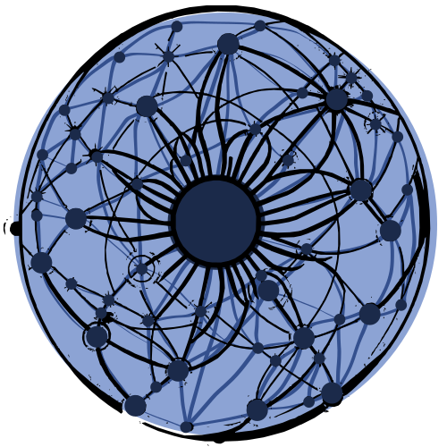

Vector Search with Uncertainty Awareness
~26K lines of pure Rust • Single binary • No runtime deps
Every AI app needs to find similar vectors fast.
But traditional approaches lose critical information.
O(N) scan — exact but slow. 100K vectors = 94ms per query.
Fast ANN but no uncertainty. Can't tell "probably close" from "definitely close".
Compresses vectors but destroys distance semantics. 8-bit ≈ 3% recall loss.
No engine captures confidence — how certain are we that this match is relevant?
From 3D neural rendering to vector search — each document becomes a probabilistic Gaussian.
Every document stores three values — not just a point, but a probability distribution.
Position in latent space, like any embedding. But it's the center of a distribution, not a point.
How much this document "matters". High α = important landmark. Low α = uncertain / noisy.
How "focused" the document is. High κ = precise topic. Low κ = broad, covers many concepts.
Query results include confidence scores. "I'm 95% sure this is relevant" vs "maybe related" — agents can act on certainty.
Hierarchical Residual Multi-resolution search — find the right cluster first, then search within it.
Reduces search from O(N) to O(N/P) with minimal recall loss.
100K vectors, 1K queries, k=64 — validated with ANN-Benchmarks methodology
Incremental HNSW indexing with custom CUDA PTX kernels for GPU search.
Insert vectors one at a time — no full rebuild. Add 1000 docs, search immediately.
float4 vectorized loads, shared memory query cache, __launch_bounds__(256) for sm_86.
CUDA → Vulkan → CPU fallback. Zero config needed.
Process 4096 queries in parallel on GPU. Auto-tuned block sizes for your hardware.
Compress vectors 3-8× with minimal recall loss. Two algorithms for different tradeoffs.
Random projection + binary coding. 4-bit gives ~3% recall loss for 8× memory reduction. Best for large-scale.
Polar coordinate quantization. Better for high-dimensional vectors (768D+). Preserves angular distance.
Search directly on compressed codes — no decompression needed. quant-index → quant-search pipeline.
Change bits/algorithms without re-ingesting. Re-quantize existing vectors on the fly.
Documents + Entities + Relations over Gaussian splats. Hybrid vector + graph search in one engine.
Hybrid search combining lexical (BM25) and semantic (vector) with Reciprocal Rank Fusion.
Configurable weights: semantic_vector_weight=0.6, semantic_bm25_weight=0.4, decay_halflife=3600s
13 tools via JSON-RPC 2.0 over stdio. Plug into Claude Code, Cursor, Hermes, any MCP client.
Everything from ingestion to GPU benchmarking in a single binary.
Edge to GPU clusters — one function call, no manual flag toggling.
| Preset | Capacity | Graph | Semantic | GPU | HNSW |
|---|---|---|---|---|---|
| simple | 10K | — | — | — | — |
| mcp | 100K | ✅ | ✅ RRF | Auto | — |
| advanced | 1M | ✅ | ✅ RRF | Opt. | M=32 |
| gpu | 5M | ✅ | ✅ | ✅ | M=48 |
| distributed | 10M | ✅ | ✅ RRF | Opt. | — |
Inspired by MemPalace — organize memory like physical space
"Store everything verbatim, never let an LLM decide what to remember"
μ, α, κ — the probabilistic representation. Fast search, compressed.
30× compressed text any LLM reads natively. ~40 tokens instead of ~1200.
Original document text. Never summarized. Source of truth.
Agent reads Closet → decides if worth it → fetches Drawer only when needed. Saves ~90% tokens.
SplatDB doesn't compete on raw QPS with Faiss. It competes on semantic uncertainty.
| Feature | SplatDB | Faiss | Pinecone |
|---|---|---|---|
| Uncertainty (α, κ) | ✅ Native | — | — |
| Knowledge Graph | ✅ GraphSplat | — | — |
| Hybrid BM25+Vector | ✅ Built-in | — | Extra $ |
| Raw QPS (CPU) | ~1K | ~50K+ | Managed |
| Self-hosted | ✅ Single binary | ✅ | — |
| Agent Memory (MCP) | ✅ 13 tools | — | REST only |
Docker image: docker run splatdb
LongMemEval benchmark
Faiss side-by-side comparison
Spatial Memory: Wings/Rooms/Halls/Tunnels
Verbatim Storage + AAAK compression
CI with GPU + test coverage
github.com/schwabauerbriantomas-gif/splatdb